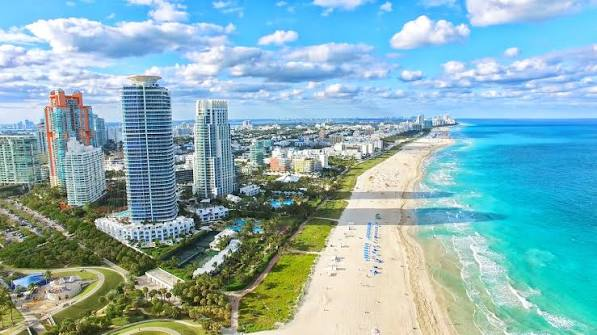

Miami
Este lugar esta altamente recomendado porque hay agencias de turismo, tranquilidad y hermosos museos con mucha historia por conocer.
Datos Curiosos
Miami es una importante ciudad y puerto de Estados Unidos situada en el sureste de Florida, con más de 400.000 habitantes en su municipio y más de 5 millones en su área metropolitana. Es un gran centro financiero, turístico y cultural, conocido mundialmente por su fuerte presencia latina y su clima cálido.
Lugares gastronomicos
Los mejores lugares gastronomicos que no te podes perder son: -Francisca Charcoal Chicken & Meats, -Paperfish Sushi, -Marabu Restaurant, -Café La Trova
Mejores hoteles para hospedarte
Algunos hoteles son: -Hampton Inn & Suites Miami/Brickell -YVE Hotel Miami -Kimpton Surfcomber Hotel

Washintong DC
Washintong es la capital de Estados Unidos lo cual hace que haya mucho turismo. Esta el museo mas grande del mundo y allí se grabó "Una noche en el museo 2"(Los museos Smithsonian).
Datos Curiosos
El nombre Washington abarca tres realidades muy distintas en Estados Unidos: el expresidente George Washington, la capital federal (Washington D. C.) y el estado de Washington en la costa oeste
Lugare gastronomicos
Algunos lugares muy ricos de Washintong DC son: -Old Ebbitt Grill - Albi - Dōgon -Zaytinya -Minibar by José Andrés
Mejores hoteles para hospedarte
Algunos lugares para hospedarte son: -Downtown -Capitol Hill -Dupont Circle -Foggy Bottom -The Wharf